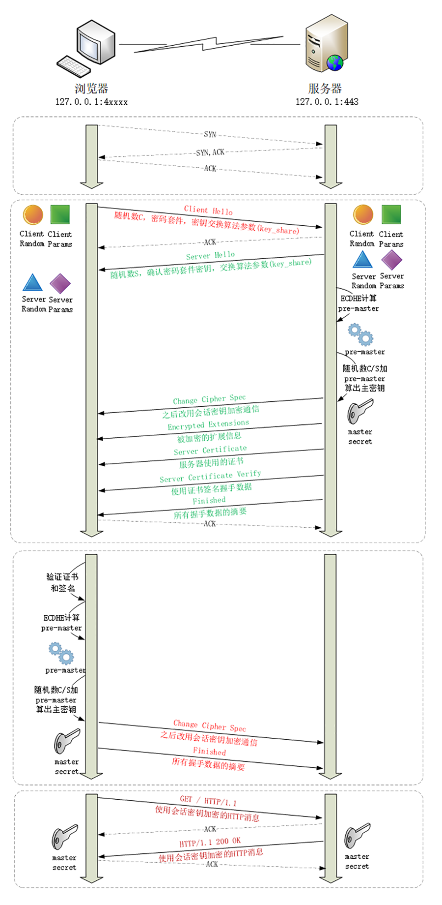

- 00 开篇词｜To Be a HTTP Hero.md
- 01 时势与英雄：HTTP的前世今生.md
- 02 HTTP是什么？HTTP又不是什么？.md
- 03 HTTP世界全览（上）：与HTTP相关的各种概念.md
- 04 HTTP世界全览（下）：与HTTP相关的各种协议.md
- 05 常说的“四层”和“七层”到底是什么？“五层”“六层”哪去了？.md
- 06 域名里有哪些门道？.md
- 07 自己动手，搭建HTTP实验环境.md
- 08 键入网址再按下回车，后面究竟发生了什么？.md
- 09 HTTP报文是什么样子的？.md
- 10 应该如何理解请求方法？.md
- 11 你能写出正确的网址吗？.md
- 12 响应状态码该怎么用？.md
- 13 HTTP有哪些特点？.md
- 14 HTTP有哪些优点？又有哪些缺点？.md
- 15 海纳百川：HTTP的实体数据.md
- 16 把大象装进冰箱：HTTP传输大文件的方法.md
- 17 排队也要讲效率：HTTP的连接管理.md
- 18 四通八达：HTTP的重定向和跳转.md
- 19 让我知道你是谁：HTTP的Cookie机制.md
- 20 生鲜速递：HTTP的缓存控制.md
- 21 良心中间商：HTTP的代理服务.md
- 22 冷链周转：HTTP的缓存代理.md
- 23 HTTPS是什么？SSLTLS又是什么？.md
- 24 固若金汤的根本（上）：对称加密与非对称加密.md
- 25 固若金汤的根本（下）：数字签名与证书.md
- 26 信任始于握手：TLS1.2连接过程解析.md
- 27 更好更快的握手：TLS1.3特性解析.md
- 28 连接太慢该怎么办：HTTPS的优化.md
- 29 我应该迁移到HTTPS吗？.md
- 30 时代之风（上）：HTTP2特性概览.md
- 31 时代之风（下）：HTTP2内核剖析.md
- 32 未来之路：HTTP3展望.md
- 33 我应该迁移到HTTP2吗？.md
- 34 Nginx：高性能的Web服务器.md
- 35 OpenResty：更灵活的Web服务器.md
- 36 WAF：保护我们的网络服务.md
- 37 CDN：加速我们的网络服务.md
- 38 WebSocket：沙盒里的TCP.md
- 39 HTTP性能优化面面观（上）.md
- 40 HTTP性能优化面面观（下）.md
- 结束语 做兴趣使然的Hero.md
27 更好更快的握手：TLS1.3特性解析
上一讲中我讲了 TLS1.2 的握手过程，你是不是已经完全掌握了呢？
不过 TLS1.2 已经是 10 年前（2008 年）的“老”协议了，虽然历经考验，但毕竟“岁月不饶人”，在安全、性能等方面已经跟不上如今的互联网了。
于是经过四年、近 30 个草案的反复打磨，TLS1.3 终于在去年（2018 年）“粉墨登场”，再次确立了信息安全领域的新标准。
在抓包分析握手之前，我们先来快速浏览一下 TLS1.3 的三个主要改进目标：兼容、安全与性能。
最大化兼容性
由于 1.1、1.2 等协议已经出现了很多年，很多应用软件、中间代理（官方称为“MiddleBox”）只认老的记录协议格式，更新改造很困难，甚至是不可行（设备僵化）。
在早期的试验中发现，一旦变更了记录头字段里的版本号，也就是由 0x303（TLS1.2）改为 0x304（TLS1.3）的话，大量的代理服务器、网关都无法正确处理，最终导致 TLS 握手失败。
为了保证这些被广泛部署的“老设备”能够继续使用，避免新协议带来的“冲击”，TLS1.3 不得不做出妥协，保持现有的记录格式不变，通过“伪装”来实现兼容，使得 TLS1.3 看上去“像是”TLS1.2。
那么，该怎么区分 1.2 和 1.3 呢？
这要用到一个新的扩展协议（Extension Protocol），它有点“补充条款”的意思，通过在记录末尾添加一系列的“扩展字段”来增加新的功能，老版本的 TLS 不认识它可以直接忽略，这就实现了“后向兼容”。
在记录头的 Version 字段被兼容性“固定”的情况下，只要是 TLS1.3 协议，握手的“Hello”消息后面就必须有“supported_versions”扩展，它标记了 TLS 的版本号，使用它就能区分新旧协议。
其实上一讲 Chrome 在握手时发的就是 TLS1.3 协议，你可以看一下“Client Hello”消息后面的扩展，只是因为服务器不支持 1.3，所以就“后向兼容”降级成了 1.2。
Handshake Protocol: Client Hello
Version: TLS 1.2 (0x0303)
Extension: supported_versions (len=11)
Supported Version: TLS 1.3 (0x0304)
Supported Version: TLS 1.2 (0x0303)
TLS1.3 利用扩展实现了许多重要的功能，比如“supported_groups”“key_share”“signature_algorithms”“server_name”等，这些等后面用到的时候再说。
强化安全
TLS1.2 在十来年的应用中获得了许多宝贵的经验，陆续发现了很多的漏洞和加密算法的弱点，所以 TLS1.3 就在协议里修补了这些不安全因素。
比如：
- 伪随机数函数由 PRF 升级为 HKDF（HMAC-based Extract-and-Expand Key Derivation Function）；
- 明确禁止在记录协议里使用压缩；
- 废除了 RC4、DES 对称加密算法；
- 废除了 ECB、CBC 等传统分组模式；
- 废除了 MD5、SHA1、SHA-224 摘要算法；
- 废除了 RSA、DH 密钥交换算法和许多命名曲线。
经过这一番“减肥瘦身”之后，TLS1.3 里只保留了 AES、ChaCha20 对称加密算法，分组模式只能用 AEAD 的 GCM、CCM 和 Poly1305，摘要算法只能用 SHA256、SHA384，密钥交换算法只有 ECDHE 和 DHE，椭圆曲线也被“砍”到只剩 P-256 和 x25519 等 5 种。
减肥可以让人变得更轻巧灵活，TLS 也是这样。
算法精简后带来了一个意料之中的好处：原来众多的算法、参数组合导致密码套件非常复杂，难以选择，而现在的 TLS1.3 里只有 5 个套件，无论是客户端还是服务器都不会再犯“选择困难症”了。

这里还要特别说一下废除 RSA 和 DH 密钥交换算法的原因。
上一讲用 Wireshark 抓包时你一定看到了，浏览器默认会使用 ECDHE 而不是 RSA 做密钥交换，这是因为它不具有“前向安全”（Forward Secrecy）。
假设有这么一个很有耐心的黑客，一直在长期收集混合加密系统收发的所有报文。如果加密系统使用服务器证书里的 RSA 做密钥交换，一旦私钥泄露或被破解（使用社会工程学或者巨型计算机），那么黑客就能够使用私钥解密出之前所有报文的“Pre-Master”，再算出会话密钥，破解所有密文。
这就是所谓的“今日截获，明日破解”。
而 ECDHE 算法在每次握手时都会生成一对临时的公钥和私钥，每次通信的密钥对都是不同的，也就是“一次一密”，即使黑客花大力气破解了这一次的会话密钥，也只是这次通信被攻击，之前的历史消息不会受到影响，仍然是安全的。
所以现在主流的服务器和浏览器在握手阶段都已经不再使用 RSA，改用 ECDHE，而 TLS1.3 在协议里明确废除 RSA 和 DH 则在标准层面保证了“前向安全”。
提升性能
HTTPS 建立连接时除了要做 TCP 握手，还要做 TLS 握手，在 1.2 中会多花两个消息往返（2-RTT），可能导致几十毫秒甚至上百毫秒的延迟，在移动网络中延迟还会更严重。
现在因为密码套件大幅度简化，也就没有必要再像以前那样走复杂的协商流程了。TLS1.3 压缩了以前的“Hello”协商过程，删除了“Key Exchange”消息，把握手时间减少到了“1-RTT”，效率提高了一倍。
那么它是怎么做的呢？
其实具体的做法还是利用了扩展。客户端在“Client Hello”消息里直接用“supported_groups”带上支持的曲线，比如 P-256、x25519，用“key_share”带上曲线对应的客户端公钥参数，用“signature_algorithms”带上签名算法。
服务器收到后在这些扩展里选定一个曲线和参数，再用“key_share”扩展返回服务器这边的公钥参数，就实现了双方的密钥交换，后面的流程就和 1.2 基本一样了。
我为 1.3 的握手过程画了一张图，你可以对比 1.2 看看区别在哪里。

除了标准的“1-RTT”握手，TLS1.3 还引入了“0-RTT”握手，用“pre_shared_key”和“early_data”扩展，在 TCP 连接后立即就建立安全连接发送加密消息，不过这需要有一些前提条件，今天暂且不说。
握手分析
目前 Nginx 等 Web 服务器都能够很好地支持 TLS1.3，但要求底层的 OpenSSL 必须是 1.1.1，而我们实验环境里用的 OpenSSL 是 1.1.0，所以暂时无法直接测试 TLS1.3。
不过我在 Linux 上用 OpenSSL1.1.1 编译了一个支持 TLS1.3 的 Nginx，用 Wireshark 抓包存到了 GitHub 上，用它就可以分析 TLS1.3 的握手过程。

在 TCP 建立连接之后，浏览器首先还是发一个“Client Hello”。
因为 1.3 的消息兼容 1.2，所以开头的版本号、支持的密码套件和随机数（Client Random）结构都是一样的（不过这时的随机数是 32 个字节）。
Handshake Protocol: Client Hello
Version: TLS 1.2 (0x0303)
Random: cebeb6c05403654d66c2329…
Cipher Suites (18 suites)
Cipher Suite: TLS_AES_128_GCM_SHA256 (0x1301)
Cipher Suite: TLS_CHACHA20_POLY1305_SHA256 (0x1303)
Cipher Suite: TLS_AES_256_GCM_SHA384 (0x1302)
Extension: supported_versions (len=9)
Supported Version: TLS 1.3 (0x0304)
Supported Version: TLS 1.2 (0x0303)
Extension: supported_groups (len=14)
Supported Groups (6 groups)
Supported Group: x25519 (0x001d)
Supported Group: secp256r1 (0x0017)
Extension: key_share (len=107)
Key Share extension
Client Key Share Length: 105
Key Share Entry: Group: x25519
Key Share Entry: Group: secp256r1
注意“Client Hello”里的扩展，“supported_versions”表示这是 TLS1.3，“supported_groups”是支持的曲线，“key_share”是曲线对应的参数。
这就好像是说：
“还是照老规矩打招呼，这边有这些这些信息。但我猜你可能会升级，所以再多给你一些东西，也许后面用的上，咱们有话尽量一口气说完。”
服务器收到“Client Hello”同样返回“Server Hello”消息，还是要给出一个随机数（Server Random）和选定密码套件。
Handshake Protocol: Server Hello
Version: TLS 1.2 (0x0303)
Random: 12d2bce6568b063d3dee2…
Cipher Suite: TLS_AES_128_GCM_SHA256 (0x1301)
Extension: supported_versions (len=2)
Supported Version: TLS 1.3 (0x0304)
Extension: key_share (len=36)
Key Share extension
Key Share Entry: Group: x25519, Key Exchange length: 32
表面上看和 TLS1.2 是一样的，重点是后面的扩展。“supported_versions”里确认使用的是 TLS1.3，然后在“key_share”扩展带上曲线和对应的公钥参数。
服务器的“Hello”消息大概是这个意思：
“还真让你给猜对了，虽然还是按老规矩打招呼，但咱们来个‘旧瓶装新酒’。刚才你给的我都用上了，我再给几个你缺的参数，这次加密就这么定了。”
这时只交换了两条消息，客户端和服务器就拿到了四个共享信息：Client Random和Server Random、Client Params和Server Params，两边就可以各自用 ECDHE 算出“Pre-Master”，再用 HKDF 生成主密钥“Master Secret”，效率比 TLS1.2 提高了一大截。
在算出主密钥后，服务器立刻发出“Change Cipher Spec”消息，比 TLS1.2 提早进入加密通信，后面的证书等就都是加密的了，减少了握手时的明文信息泄露。
这里 TLS1.3 还有一个安全强化措施，多了个“Certificate Verify”消息，用服务器的私钥把前面的曲线、套件、参数等握手数据加了签名，作用和“Finished”消息差不多。但由于是私钥签名，所以强化了身份认证和和防窜改。
这两个“Hello”消息之后，客户端验证服务器证书，再发“Finished”消息，就正式完成了握手，开始收发 HTTP 报文。
虽然我们的实验环境暂时不能抓包测试 TLS1.3，但互联网上很多网站都已经支持了 TLS1.3，比如Nginx、GitHub，你可以课后自己用 Wireshark 试试。
在 Chrome 的开发者工具里，可以看到这些网站的 TLS1.3 应用情况。

小结
今天我们一起学习了 TLS1.3 的新特性，用抓包研究了它的握手过程，不过 TLS1.3 里的内容很多，还有一些特性没有谈到，后面会继续讲。
- 为了兼容 1.1、1.2 等“老”协议，TLS1.3 会“伪装”成 TLS1.2，新特性在“扩展”里实现；
- 1.1、1.2 在实践中发现了很多安全隐患，所以 TLS1.3 大幅度删减了加密算法，只保留了 ECDHE、AES、ChaCha20、SHA-2 等极少数算法，强化了安全；
- TLS1.3 也简化了握手过程，完全握手只需要一个消息往返，提升了性能。
课下作业
- TLS1.3 里的密码套件没有指定密钥交换算法和签名算法，那么在握手的时候会不会有问题呢？
- 结合上一讲的 RSA 握手过程，解释一下为什么 RSA 密钥交换不具有“前向安全”。
- TLS1.3 的握手过程与 TLS1.2 的“False Start”有什么异同？
欢迎你把自己的学习体会写在留言区，与我和其他同学一起讨论。如果你觉得有所收获，也欢迎把文章分享给你的朋友。